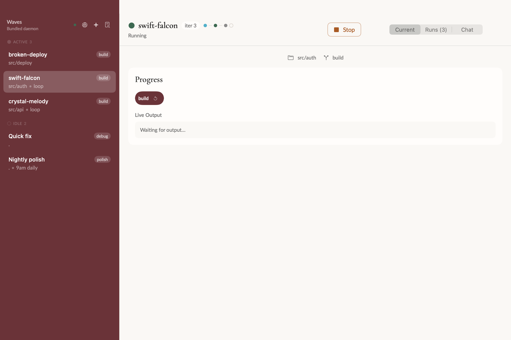
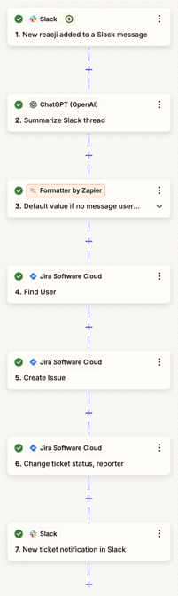

A · Compact route
Keep the plan in one line; reveal detail when needed. From Loopflow’s early progress pills.
Open A ↗Same captured Linear Task and description; simulated not-started state. Flows use local definitions, with an illustrative default. Start and comments are prototypes.
Keep the plan in one line; reveal detail when needed. From Loopflow’s early progress pills.
Open A ↗These references separate the overview from step details. We’re adapting that pattern to the moment before a Task’s first run. The diagrams show order and nested flows; they do not invent parallelism or completed steps.

The earlier progress pills made the sequence compact and used burgundy for the current step. A borrows that small footprint, with neutral steps before execution.
February 3 progress-pill implementation ↗
February 26 screenshot source ↗

A vertical outline keeps each step readable. Selecting a step opens its details and options. B adapts this to an expandable explanation inside the Task page.

Connected cards expose dependencies and group repeated jobs. C borrows the connected structure and grouping for a nested Flow. GitHub’s source is a run monitor; ours previews a future run.
Reference images belong to their respective projects. Product documentation checked September 25, 2026. The next studies will cover (2) active, paused or blocked Runs without an open Session and (3) one or more open Sessions.